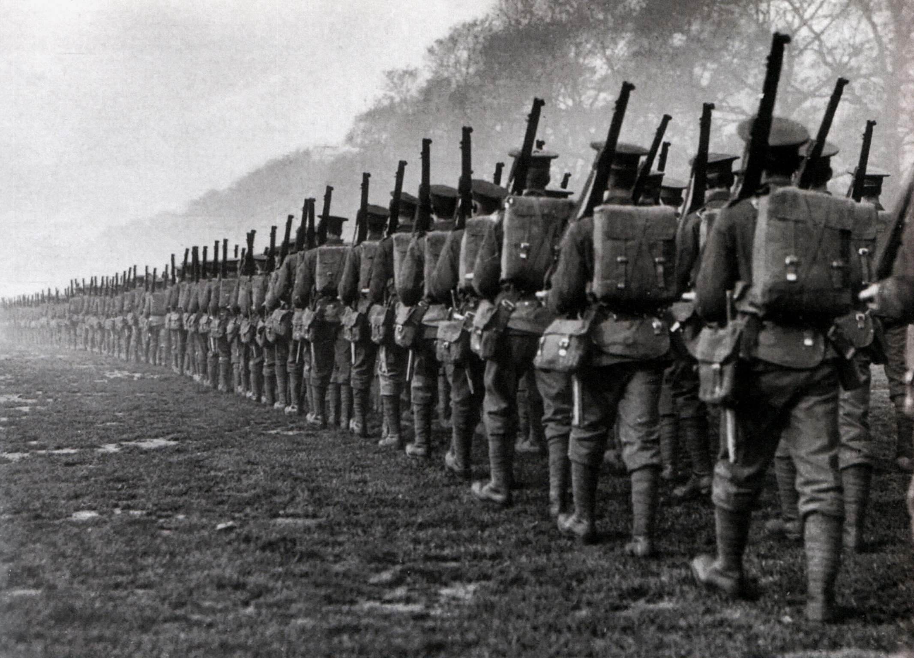
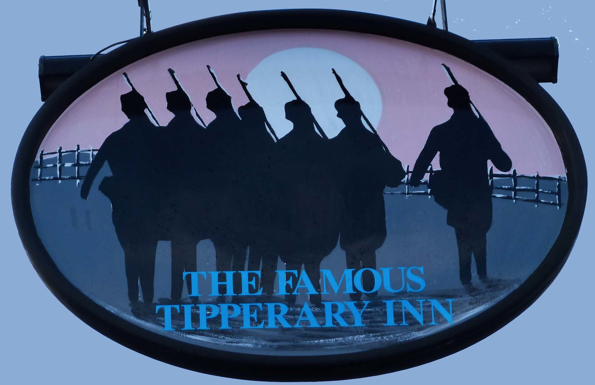

Il ruolo della musica nella Prima guerra mondiale
La Prima guerra mondiale è sicuramente un evento che noi tutti conosciamo e che ha plasmato la società in cui oggi viviamo. Combattuta dal 1914 al 1918, l’Italia entrò nel 1915, si concluse con la vittoria delle forze dell’Intesa ai danni degli Imperi centrali. Ciò portò alla disgregazione di antichissimi imperi ed a una crisi generalizzata all’interno del sistema europeo, che metterà le basi per il secondo conflitto mondiale. Ma se questo è ciò che sappiamo tutti, forse non tutti sanno del ruolo che ha avuto la musica durante quel periodo, sia in trincea che non, per tutte le nazioni in campo. Oggi proveremo a far luce sulla cosa, concentrandoci di più (ma non esclusivamente) sul contesto italiano.
È nel 1917 che avviene la tristemente famosa disfatta di Caporetto, l’esercito italiano è costretto alla rotta da quello austriaco e indietreggia di numerosi kilometri nell’entroterra. Il fronte si stabilizza solo nei pressi del fiume Piave e, sempre in questa posizione, avviene la cosiddetta “battaglia del Solstizio” nel 1918. È in questa occasione che viene composta probabilmente la canzone più famosa della nostra Grande Guerra, ovvero La leggenda del Piave. Essa parla di resistenza all’invasore ed ha un ritmo decisamente motivante e calzante; è talmente popolare da diventare provvisoriamente inno italiano dopo l’armistizio del 1943. Viene creata per dare morale alle truppe al fronte in un momento di così grande sconforto ed aiutare i soldati a sopportare i dolori della guerra. Difatti, è questo il motivo dell'ampia diffusione di canzoni popolari durante la Prima guerra mondiale: rasserenare gli animi.
Come è noto, la coesione delle truppe è fondamentale affinché la guerra possa risultare vittoriosa, e la musica è uno strumento immenso in questo senso. Essa è in grado di creare un senso di appartenenza e comunità tra i soldati, di speranza verso una casa o un’amata a cui ritornare – sentimento che spinge moltissimo alla lotta e alla resistenza estrema. O ancora, le canzoni sono in grado di esorcizzare la morte, per quanto possibile, o anche di valorizzare le tematiche del sacrificio e del coraggio, fondamentali in un contesto simile. Tuttavia, la musica relativa alla Prima guerra mondiale non viene prodotta solo durante la guerra, ma anche prima. Ad esempio, nella diatriba italiana tra neutralisti ed interventisti viene prodotta La ragazza neutrale.
Vediamo adesso però qualche esempio concreto oltre la già citata La leggenda del Piave. Rimanendo in Italia, l’altra canzone sicuramente più nota è la napoletana ‘O surdato ‘nnamurato, resa celeberrima poi dall’attrice Anna Magnani. Un pezzo sicuramente più onomatopeico è Tapum, il cui titolo si riferisce al rumore degli spari nel campo di battaglia. Vi sono anche canzoni più entusiaste che esaltano le battaglie: un esempio è la famosa Giovinezza cantata dal reparto degli Arditi e successivamente usata pure dal regime fascista. Parlando di stati esteri, brani molto famosi come It’s a Long, Long Way to Tipperary e la Colonel Bogey March sono stati creati in Regno Unito. Per i francesi abbiamo invece Quand Madelon e per i tedeschi numerose marce militari.
Il quadro è decisamente più ampio di questo, ma in ogni caso non si discosta dal motivo comune presente in tutte queste canzoni: provare a supportare gli animi. Difatti, in un contesto tremendo come la guerra, la musica può avere una funzione importantissima per aiutare i soldati, ma ciò vale anche nella vita di tutti i giorni. Per esprimere il concetto in Italia abbiamo un detto: "canta che ti passa". Non è un caso che questo nasca proprio nelle trincee della Prima guerra mondiale.
Fonti: Itinerari della Grande Guerra,Centenario Prima guerra mondiale,Europeana